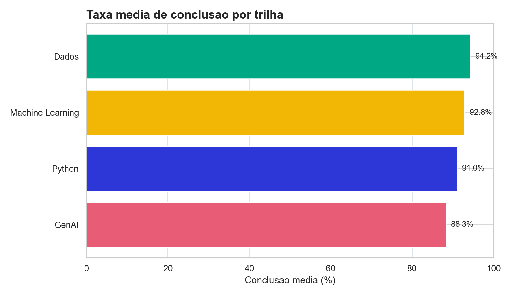
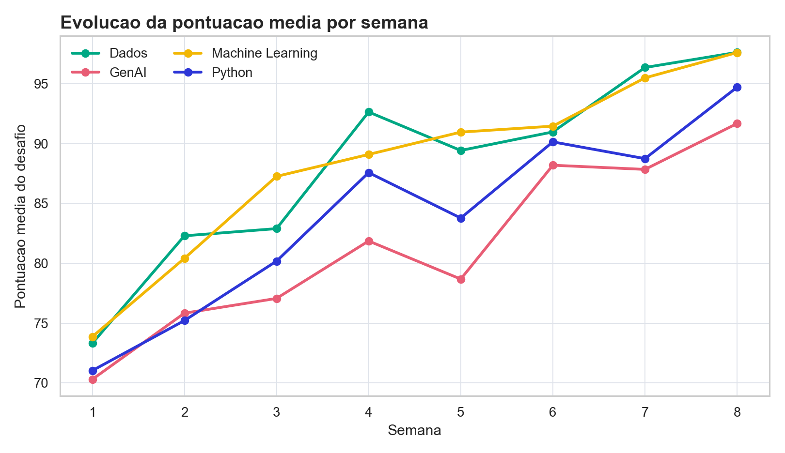
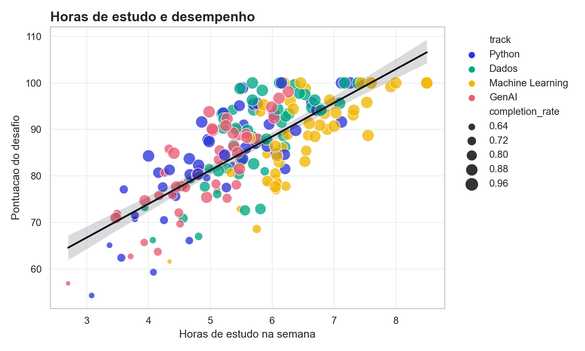
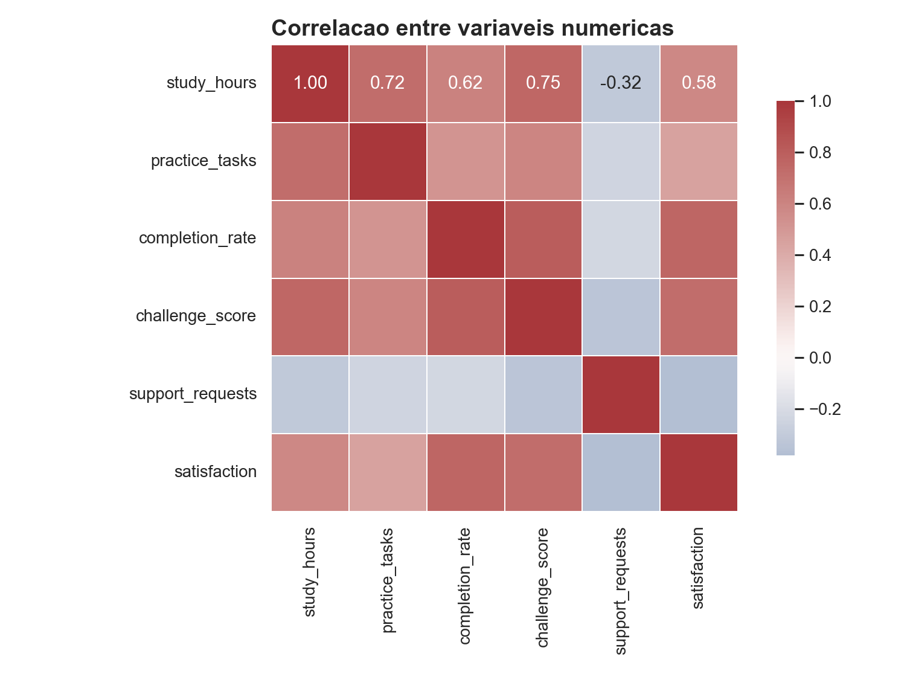

Qual trilha tem maior conclusão média?
Use barras quando categorias precisam ser comparadas lado a lado.
DATA_VIS · CHART_SELECTION
Aprenda a escolher, construir e interpretar visualizações com Matplotlib, Seaborn, Plotly e pandas a partir de uma pergunta analítica clara.
// ANTES DO GRAFICO
O erro mais comum em visualização é escolher a biblioteca antes de decidir o que precisa ser comparado, explicado ou investigado. Nesta aula, a base mostra atividade de aprendizagem em quatro trilhas Code Zone.
Use barras quando categorias precisam ser comparadas lado a lado.
Use linhas quando a ordem temporal é parte da pergunta.
Use dispersão quando duas variáveis numéricas variam juntas.
Use heatmap quando várias relações precisam ser vistas ao mesmo tempo.
| week | learner | track | hours | tasks | completion | score | satisfaction |
|---|---|---|---|---|---|---|---|
| Carregando amostra do CSV... | |||||||
// FIGURA, EIXO E CAMADAS
Matplotlib é a base histórica de visualização em Python. Ele exige mais decisões explícitas, mas dá controle sobre figura, eixo, escala, rótulo, grade, legenda e exportação.
summary = df.groupby("track", as_index=False)["completion_rate"].mean()
fig, ax = plt.subplots(figsize=(9, 5))
ax.barh(summary["track"], summary["completion_rate"] * 100)
ax.set_title("Taxa media de conclusao por trilha", loc="left")
ax.set_xlabel("Conclusao media (%)")
ax.set_xlim(0, 100)
fig.tight_layout()
fig.savefig("outputs/matplotlib_completion_by_track.png", dpi=180)

Relatórios, exportação estática, composição cuidadosa e ajustes finos.
Um gráfico pode estar tecnicamente correto e ainda assim responder uma pergunta mal formulada.
// ESTATISTICA VISUAL
Seaborn trabalha muito bem com DataFrames e facilita gráficos de relação, distribuição, comparação e matrizes de correlação. Ele é especialmente útil na fase exploratória.
sns.scatterplot(
data=df,
x="study_hours",
y="challenge_score",
hue="track",
size="completion_rate",
alpha=0.78,
ax=ax,
)
sns.regplot(
data=df,
x="study_hours",
y="challenge_score",
scatter=False,
color="#0d0f1a",
ax=ax,
)

| track | learners | hours | completion | score | satisfaction |
|---|---|---|---|---|---|
| Carregando resumo... | |||||
// OUTRAS FERRAMENTAS
A mesma pergunta pode virar gráfico estático, exploração interativa ou protótipo rápido. O importante é separar análise, comunicação e produto.
Bom quando o DataFrame já está pronto e você precisa validar uma ideia sem composição visual elaborada.
df.groupby("track")["challenge_score"].mean().plot.bar()Bom para hover, zoom, filtros visuais e exploração com stakeholders.
Abrir dashboard HTML ↗Boa opção para especificar visualizações por mapeamentos como eixo, cor e faceta.
alt.Chart(df).mark_point()Depois dos gráficos, ferramentas como Streamlit e Dash organizam filtros, estado e publicação.
st.plotly_chart(fig)| Necessidade | Visual | Biblioteca sugerida | Motivo |
|---|---|---|---|
| Comparar categorias | Barras | Matplotlib ou Seaborn | Leitura direta de diferenças. |
| Ver tendência | Linha | Matplotlib | Controle claro de eixo temporal. |
| Investigar relação | Dispersão | Seaborn | Combina cor, tamanho e regressão. |
| Explorar pontos | Interativo | Plotly | Hover revela detalhes sem poluir o gráfico. |
// EXERCICIOS
A prática mais importante é mudar a pergunta e escolher outro gráfico, não apenas repetir o código.
Mostre a distribuição de `challenge_score` por trilha. Compare histograma, KDE e boxplot.
Calcule a participação de cada trilha no total de chamados de suporte.
Remova uma trilha e veja se a correlação entre horas e pontuação muda.
Escreva uma conclusão de duas frases baseada em um gráfico e declare uma limitação.
O próximo bloco transforma gráficos em dashboards com filtros, navegação e componentes interativos.